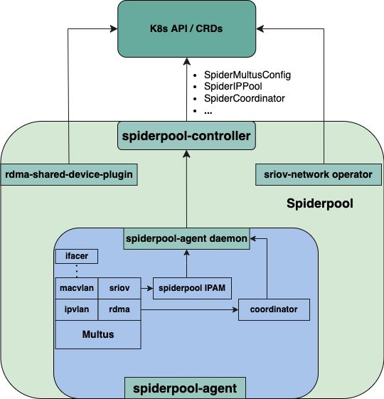
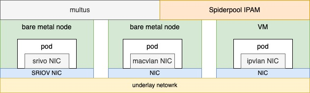

Spiderpool Architecture
English | 简体中文
Architecture

Spiderpool consists of the following components:
-
Spiderpool-controller
A set of deployments that interact with the API Server, managing multiple CRD resources such as SpiderIPPool, SpiderSubnet, SpiderMultusConfig, etc. It implements validation, creation, and status updates for these CRDs. Additionally, it responds to requests from Spiderpool-agent Pods, performing functions like allocation, release, reclamation, and managing automatic IP pools.
-
Spiderpool-agent
A set of daemonsets running on each node, assisting in the installation of plugins such as Multus, Coordinator, IPAM, and CNI on each node. It responds to CNI requests for IP allocation during Pod creation and interacts with Spiderpool-controller to handle Pod IP allocation and release. It also interacts with Coordinator, assisting the Spiderpool plugin in implementing IP allocation and helping the coordinator plugin with configuration synchronization.
-
CNI plugins include:
Spiderpool IPAM plugin: a main CNI used to handle IP allocation. refer to IPAM plugin
coordinator plugin: as a chain plugin, it performs various functions such as routing coordination for multiple network interfaces, checking for IP conflicts, ensuring host connectivity, and fixing MAC addresses. refer to coordinator
ifacer plugin: as a chain plugin, it automates the creation of bond and VLAN virtual interfaces that serve as parent interfaces for plugins like macvlan and ipvlan. refer to Ifacer Plugin
Multus CNI: a scheduler for other CNI plugins.
CNI plugins: include Macvlan CNI, vlan CNI, ipvlan CNI, SR-IOV CNI, ovs CNI, Calico CNI, Weave CNI, Cilium CNI, etc.
-
SR-IOV related components:
SR-IOV network operator: Facilitates the installation and configuration of sriov-cni. For more details, refer to sriov-cni usage.
-
RDMA components:
RDMA shared device plugin: Used to discover shared RDMA devices on the host and report them to Kubelet for use by the RDMA CNI.
RDMA CNI: It implements network isolation for RDMA device.
SR-IOV network operator: Facilitates the installation and configuration of sriov-cni.
ipoib CNI: It implements ipoib cni for infiniband scenario.
Use case: Pod with one overlay interface and multiple underlay interfaces

In overlay networks, Spiderpool uses Multus to add an overlay NIC (such as Calico or Cilium) and multiple underlay NICs (such as Macvlan CNI or SR-IOV CNI) for each Pod. This offers several benefits:
-
Rich IPAM features for underlay CNIs, including shared/fixed IPs, multi-NIC IP allocation, and dual-stack support.
-
Route coordination for multiple underlay CNI NICs and an overlay NIC for Pods, ensuring the consistent request and reply data paths for smooth communication.
-
Use the overlay NIC as the default one with route coordination and enable local host connectivity to enable clusterIP access, local health checks of applications, and forwarding overlay network traffic through overlay networks while forwarding underlay network traffic through underlay networks.
The integration of Multus CNI and Spiderpool IPAM enables the collaboration of an overlay CNI and multiple underlay CNIs. For example, in clusters with nodes of varying network capabilities, Pods on bare-metal nodes can access both overlay and underlay NICs. Meanwhile, Pods on virtual machine nodes only serving east-west services are connected to the Overlay NIC. This approach provides several benefits:
-
Applications providing east-west services can be restricted to being allocated only the overlay NIC while those providing north-south services can simultaneously access overlay and underlay NICs. This results in reduced Underlay IP resource usage, lower manual maintenance costs, and preserved pod connectivity within the cluster.
-
Fully integrate resources from virtual machines and bare-metal nodes.

Use case: Pod with multiple underlay CNI interfaces

In underlay networks, Spiderpool can work with underlay CNIs such as Macvlan CNI and SR-IOV CNI to provide the following benefits:
-
Rich IPAM capabilities for underlay CNIs, including shared/fixed IPs, multi-NIC IP allocation, and dual-stack support
-
One or more underlay NICs for Pods with coordinating routes between multiple NICs to ensure smooth communication with consistent request and reply data paths
-
Enhanced connectivity between open-source underlay CNIs and hosts using additional veth network interfaces and route control. This enables clusterIP access, local health checks of applications, and much more
How can you deploy containers using a single underlay CNI, when a cluster has multiple underlying setups?
-
Some nodes in the cluster are virtual machines like VMware that don't enable promiscuous mode, while others are bare metal and connected to traditional switch networks. What CNI solution should be deployed on each type of node?
-
Some bare metal nodes only have one SR-IOV high-speed NIC that provides 64 VFs. How can more pods run on such a node?
-
Some bare metal nodes have an SR-IOV high-speed NIC capable of running low-latency applications, while others have only ordinary network cards for running regular applications. What CNI solution should be deployed on each type of node?
By simultaneously deploying multiple underlay CNIs through Multus CNI configuration and Spiderpool's IPAM abilities, resources from various infrastructure nodes across the cluster can be integrated to solve these problems.

For example, as shown in the above diagram, different nodes with varying networking capabilities in a cluster can use various underlay CNIs, such as SR-IOV CNI for nodes with SR-IOV network cards, Macvlan CNI for nodes with ordinary network cards, and ipvlan CNI for nodes with restricted network access (e.g., VMware virtual machines with limited layer 2 network forwarding).
Use case: underlay CNI on public cloud and VM
It is hard to implement underlay CNI in public cloud, OpenStack, VMware. It requires the vendor underlay CNI on specific environments, as these environments typically have the following limitations:
- The IAAS network infrastructure implements MAC restrictions for packets. On the one hand, security checks are conducted on the source MAC to ensure that the source MAC address is the same as the MAC address of VM network interface. On the other hand, restrictions have been placed on the destination MAC, which only supports packet forwarding by the MAC address of VM network interfaces.
The MAC address of the Pod in the common CNI plugin is newly generated, which leads to Pod communication failure.
- The IAAS network infrastructure implements IP restrictions on packets. Only when the destination and source IP of the packet are assigned to VM, packet could be forwarded rightly.
The common CNI plugin assigns IP addresses to Pods that do not comply with IAAS settings, which leads to Pod communication failure.
Spiderpool provides IP pool based on node topology, aligning with IP allocation settings of VMs. In conjunction with ipvlan CNI, it provides underlay CNI solutions for various public cloud environments.
Use case: utilize RDMA for network transmission
RDMA (Remote Direct Memory Access) allows network cards to directly interact with memory, reducing CPU overhead and alleviating the burden on the kernel protocol stack. This technology offloads the network protocol stack to the network card, resulting in effective reduction of network transmission latency and increased throughput.
Currently, RDMA finds extensive applications in fields such as AI computing and storage. Macvlan, IPvlan, and SR-IOV CNIs enable transparent RDMA network card passthrough to Pods within the Kubernetes platform. Spiderpool enhances these CNIs by providing additional capabilities including IPAM, host connectivity, clusterIP access, as well as simplifying the installation process and usage steps of dependent components in the community.